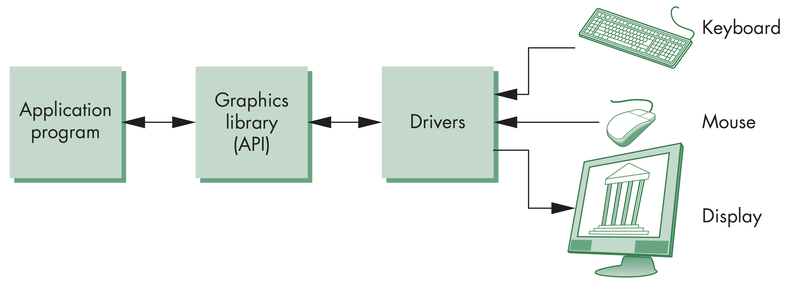
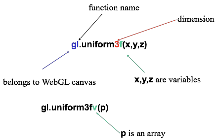

计算机图形学
第二章 图形学编程
OpenGL和WebGL
OpenGL和WebGL
OpenGL体系
OpenGL和WebGL
OpenGL代码示例

#include <GL/glut.h>
void display()
{
glClear(GL_COLOR_BUFFER_BIT);
glColor3f( 1.0, 1.0, 1.0 );
glBegin(GL_QUAD);
glVertex3f( -0.5, -0.5, 0.0 );
glVertex3f( -0.5, 0.5, 0.0 );
glVertex3f( 0.5, 0.5, 0.0 );
glVertex3f( 0.5, -0.5, 0.0 );
glEnd();
glFlush();
}
int main(int argc, char** argv)
{
glutInit(&argc, argv);
glutInitDisplayMode(GLUT_SINGLE | GLUT_RGB);
glutInitWindowPosition(80, 80);
glutInitWindowSize(400, 300);
glutCreateWindow("A Simple Triangle");
glutDisplayFunc(display);
glutMainLoop();
}
OpenGL和WebGL
关于旧版OpenGL程序的说明
新旧版本的OpenGL差异体现在如下几点:
- 大部分的OpenGL旧版函数已不再支持，转而利用着色器编程直接控制GPU
- 旧有OpenGL程序是建立在状态机基础上，许多需要大量使用的状态机变量默认值已不再存在，如viewing, color, windows parameter等
- 但是程序的处理过程和逻辑保持不变
OpenGL和WebGL
WebGL程序执行

OpenGL和WebGL
OpenGL的事件循环
OpenGL示例程序中，主函数是以回调函数或者事件监听的形式对绘制函数进行调用
每个程序都必须定义一个渲染回调函数
对于静态绘制应用，只需要执行一次绘制函数即可，而对于动态更新的应用，绘制函数需要多次调用，也可以递归调用，但是每次对输出的重绘都需要由事件触发
OpenGL和WebGL
OpenGL非面向对象
OpenGL是按面向过程的设计，，因此对于一些逻辑函数，往往有多种实现，其区别在于不同的类型，如往着色器中传输数值
- gl.uniform3f
- gl.uniform2i
- gl.uniform3dv
其底层的数据存在模式也同样，因此需要格外关注数据类型及其占用空间大小
OpenGL和WebGL
WebGL函数定义
OpenGL和WebGL
WebGL的常量
- WebGL中的常量都定义在cancas对象中
- 在桌面版的OpenGL版本中，这些常量定义在头文件中，如gl.h
- 示例
- 桌面版: glEnable( GL_DEPTH_TEST );
- WebGL: gl.enable( gl.DEPTH_TEST );
- 桌面版：glClear(GL_COLOR_BUFFER_BIT);
- WebGL: gl.clear( gl.COLOR_BUFFER_BIT );
OpenGL和WebGL
WebGL和GLSL
WebGL需要写着色器，与面向过程的旧版OpenGL模型相比，不需要过多地依赖OpenGL状态机变量。因此，在OpenGL3.1版本以后，状态机变量、属性及其它相关的函数已不再支持
WebGL所有的工作都在着色器中完成，应用程序的主要任务就是往GPU中传递数据
OpenGL和WebGL
初识GLSL
GLSL，全称为OpenGL Shading Language，是一种与C风格类似的编程语言，提供了预定义的矩阵、向量(2,3,4d)等类型，支持操作符重载，具有C++风格的构造器。与GLSL类似的编程语言还有NVidia的Cg和微软的HLSL。源代码需要送到着色器中编译运行。WebGL中定义的函数其编译、链接运行都在着色器中，可以直接实现对着色器中数据的控制